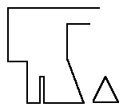

Not seen in Nockert's Typology, Type 4 Hoods are typified as
""
There is one example of this type of hood; the Bocksten hood
Return to Contents
Some Clothing of the Middle Ages, by I. Marc Carlson, Copyright 1996 This code is given for the free exchange of information, provided the Author's Name is included in all future revisions, and no money change hands-